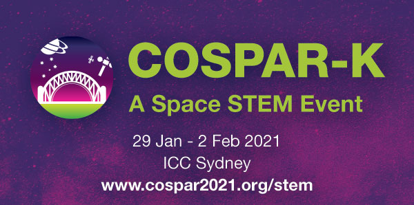
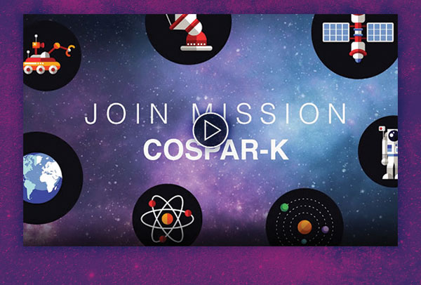
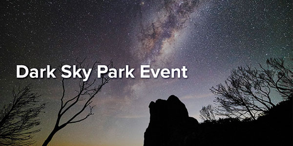

| *|MC:SUBJECT|* | View this email in your browser |
|
|

|
|  |
|  |
|
COSPAR 2021 is thrilled to announce our partnership with the NSW Department of Education's STEM Industry School Partnership Program for our Space STEM Event, COSPAR-K. Professor Russell Boyce, Chair of the 43rd COSPAR Assembly 2021 confirmed his excitement of the partnership stating, "We are making a deliberate effort to reach out to and motivate young people to pursue STEM careers that will contribute to Australia's advanced manufacturing economy. We see this as one of the lasting legacies of COSPAR 2021." "There couldn't be a better time for Australia and our space research ambitions to have this conference on our shores," said Dr Scott Sleap, Project Lead for the SISP Program, who welcomed the partnership on behalf of the NSW Department of Education. COSPAR-K will run simultaneously with the COSPAR Assembly at the ICC Sydney from 29 January – 2 February 2021. Several exciting activities and initiatives have been confirmed including a Plants in Space showcase, model bottle rocket designing and testing competition, Mars Rover robotics simulations and a Mars Rover Challenge. This partnership is will also providing equitable access to regional students in NSW via a COSPAR-K TV Channel. Stay tuned for more announcements on this! We are inviting teachers, students and the public to engage in a conversation about space to drive innovation for generational change. We want you to be part of building Australia's future prosperity. To stay up to date with the latest developments on activities and initiatives join Mission COSPAR-K. |
|  |
|
Help create a world record by measuring light pollution on 21 June, Australia’s longest night. The Australian Dark Sky Alliance is coordinating thousands of people to map light pollution. It’s a world record attempt, starting from 5pm AEST and following night fall around the world. This attempt will be supported by night sky enthusiasts at the ARC Centre of Excellence in All Sky Astrophysics in 3 Dimensions (ASTRO3D). Participants will watch videos, answer questions and conduct a night sky observation. Measuring and mapping light pollution will help develop dark sky planning guidelines and tourist opportunities for astronomers and biologists studying the effects of artificial light, including on wildlife. To register and find out more visit worldrecordlight.thinkific.com. |
|
See what the animals at Australia’s most famous park have been up to during isolation! Taronga is bringing its beautiful zoo directly into your living room through TarongaTV! Tune in daily to see your favourite animals, meet the friendly keepers and learn what goes on behind the scenes at Taronga. As well as rare and endangered species from around the world, Taronga Zoo is home to many of Australia’s native animals and is positioned right on the harbour. The Taronga Zoo ferry service is only a 12 minute scenic ride from the steps of the Opera House. |

|
COSPAR 2021 Secretariat
Emma Bowyer Contact COSPAR HQ
Aaron Janosky For further information regarding the COSPAR 2021 scientific program also visit COSPAR (cospar@cosparhq.cnes.fr). Scientific assembly abstract submission. |
General Enquiries
Selina Moscatt Sponsorship & ExhibitionsMarketing & Communication
Suellen Holland Accommodation Management
Adriane Pinto Registration
Jessica Moebus This email was sent to *|EMAIL|*. |